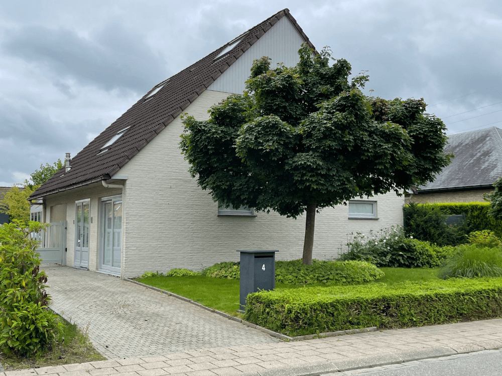

Instapklare vrijstaande woning met mooie aangelegde tuin.
De woning, met meer dan 220 m2 bewoonbare oppervlakte, ligt op een rustige locatie maar is toch zeer centraal gelegen en heeft een goede bereikbaarheid naar Mechelen en Lier, en naar de E19 via de A6. Scholen, supermarkt, openbaar vervoer en dokterspraktijken liggen in de directe omgeving.
Deze woning is in 2012 volledig gerenoveerd in landelijke stijl met stijlvolle elementen en ingemaakte kasten.
Dit huis springt eruit door zijn mooie lichtinval, goede afwerking en is zeer goed onderhouden. De leefruimtes hebben een leuk uitzicht over de volledig omheinde en ingerichte tuin met elektriciteitsbekabeling. Een vijver met natuurlijke filter en verlichting zorgen voor een glasheldere, zorgeloze en sfeervolle vijver. In het voor- en najaar kan je in de wintertuin nog genieten van de eerste/laatste zonnestralen. Naast de wintertuin is er nog een overdekt terras.
De leefruimte is met parket gevloerd. Met een schuifdeur kan je de eetkamer afsluiten van de keuken. De keuken is volledig geïnstalleerd en beschikt over veel opbergmogelijkheden. Er is beneden ook een apart bureau voorzien, bereikbaar via de inkomhal en eventueel geschikt voor een vrij beroep. Het gelijkvloers beschikt nog over een praktische wasplaats met veel berging, verbonden met een aparte deur naar de tuin. Er is tevens een apart toilet.
Op de eerste verdieping treffen we een grote slaapkamer aan, een aparte dressing en badkamer. De badkamer is geïnstalleerd met inloopdouche, lavabo en handdoekdroger. Daarnaast is er nog een tweede slaapkamer. De grote speelruimte is eenvoudig om te vormen tot een derde slaapkamer of bureau. Zowel de grote slaapkamer als de speelkamer beschikken over een vaste airco. Daarnaast is er nog een apart toilet.
De zolderverdieping, die bereikbaar is via een vaste trap, bestaat uit een logeer/slaapkamer en praktische berging. Hierdoor beschikt deze woning over potentieel 4 slaapkamers.
De woning beschikt over zonnepanelen van 5400 watt piek, opbrengst +/- 5000 kilowatt op jaarbasis. Groene stroomcertificaten zijn te bekomen aan 450 euro/stuk.
Het huis is voorzien van een alarminstallatie.
Achteraan bevindt zich een garage van meer dan 36 m2.
Bezichtingen
De villa is te bezichtigen enkel na afspraak (contactgegevens) op de volgende dagen:
Zaterdag 17 september van 10 u. tot 17 u.
Zondag 18 september van 10 u. tot 13 u.
Aankoopvoorwaarden
De villa is te koop onder gesloten omslag via bijgevoegd formulier: optie tot aankoop.
Dit formulier wordt ofwel per mail verzonden ofwel in de brievenbus van het pand gestoken voor maandag 19 september 2022 22 u.
Dit aanbod wordt door de eigenaar vóór woensdagavond 21 september 2022 22 u. schriftelijke aanvaard ten welk geval de verkoop/aankoopbelofte of de verkoopovereenkomst binnen de 2 weken door de partijen zal ondertekend worden.
De kandidaat-koper(s) worden schriftelijk op de hoogte gesteld van de al of niet aanvaarding via het volgende email adres: villatekoop.4@gmail.com of hun telefoonnummer : 0471 08 98 96